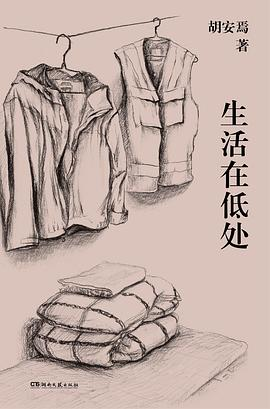

《生活在低处》

总体观点
人生的价值绝不取决于你身处社会的阶层高低或银行账户余额，而取决于你在任何卑微逼仄的处境中，能否保持对自我的真诚审视与内心的体面。
社会机器总是在用‘成功学、内卷与出人头地’的单一标尺对普通人进行无情绑架与精神PUA，而‘生活在低处’不是消极摆烂，而是一种主动卸载社会虚荣、向内寻找精神自足的清醒选择。
写作对于普通劳动者而言，不是通往名利阶梯的跳板，而是一套抵御生活磨损、安放隐秘痛苦，并在原子化冷漠世界中重新确认‘我还在有尊严地活着’的精神救赎容器。
核心观点
-
1. ‘低处’不是耻辱的深渊，而是看清世界真相最真实的平地
站在高处的人总习惯于宏大叙事与虚妄自恋，而唯有身处底层、干过最脏最累体力活的人，才能切身触摸到社会齿轮运转的粗糙咬合。
在面包房当学徒、在服装店当导购、在物流园夜班分拣包裹，这些看似无光彩的经历洗去了作者所有文人的矫情与虚饰。 -
2. 警惕把‘工作’异化为评判一个人全部价值的唯一神龛
现代社会最残酷的谎言就是让人把自己的灵魂彻底抵押给职场与老板；工作只是维持生存的交易，下班后的精神世界才属于你自己。
胡安焉在漫长二十年里换了十九份工作，哪怕在最穷困潦倒时，每天下班回到逼仄出租屋，也要点亮台灯阅读陀思妥耶夫斯基两小时。 -
3. 老实人在世俗社会的‘笨拙’，往往是保护善良天性不被污染的代价
不会八面玲珑讨好领导、不愿在商业算计中坑害同侪，这种世俗意义上的‘情商低’，实则是坚守道德良知不妥协的珍贵人格风骨。
在漫画社与淘宝店打工时面对合伙人唯利是图的暗箱操作，作者宁可选择净身出户辞职流浪，也绝不参与欺瞒消费者的行径。 -
4. 物质欲望的断舍离是赢得心灵绝对自由的最便宜门票
只要一个人能把物欲压缩到一日三餐粗茶淡饭、不为虚荣买单，他就掌握了随时对任何无理压榨与PUA说‘不’的终极权力。
长年住在房租几百元的城中村简陋单间，自己做饭买打折蔬菜，低廉的生活成本让作者拥有了随时辞职安心写作数月的从容底气。 -
5. 内向型人格的自我和解：停止强迫自己变成那个‘外向开朗的社会成功人士’
不再为社交恐惧、不擅言辞而感到自卑与自责，承认并接纳自己的敏感与退缩，将这种敏感转化为对文字与人性的极致体察。
坦然面对自己在热闹饭局上的笨拙无措，学会从容离场，回到自己的小房间静静享受独处的丰盈与宁静。 -
6. 阅读与写作是穷人手中最强大也最平等的精神自卫武器
一本经典好书只需几十块钱甚至公共图书馆免费借阅，却能让一个干着粗苯苦工的体力劳动者与人类历史上最伟大的灵魂平等对话。
在通宵夜班分拣快递浑身酸痛的清晨，坐在路边摊吃一碗热馄饨，手里捧着卡夫卡小说，精神上体验到神明般的自由与尊严。
全书结构
-
自序 普通的事物 与 第一章 童年，暨我的家庭史
回顾广州老城区童年游乐场的记忆碎片、普通双职工家庭的悲欢离合，以及父亲悉心照料巴西龟的平凡琐事，诚恳剖析内向孤僻人格在早年家庭环境中的逐渐成型。
细致回忆童年坐在天台看鸽子飞过的漫长午后，以及自己对外界喧嚣本能的退缩与敏感观察。 -
第二章 我为什么写作（1. 迟钝、2. 一事无成的人、3. 崇高）
剖析步入社会后的长期适应不良与一事无成感，探讨青年时期的迷茫、换过近二十份卑微底层工作的流转轨迹，以及在迟钝笨拙中重新发现写作精神支柱的心理过程。
讲述在各种低薪零工间频繁辞职跳槽、面对世俗成功标准时的自惭形秽，最终在文学经典的阅读中获得不可替代的心灵庇护。 -
第二章 我为什么写作（4. 在大理、5. 不打工，就写作、6. 出路、7. 非虚构）
记录大理客栈打工与隐居写作的生活片段，直面“不打工就写作”在生计与自尊之间的撕扯，阐释从早年尝试虚构小说走向非虚构纪实写作的观念转折。
在大理简陋的出租屋里每日定量写下千余字，与当地同样漂泊的年轻人交谈，体认真实生活细节远比虚构技巧更加厚重有力。 -
第三章 活着，写着（动物记 与 日常记）
聚焦日常生活中的微观生灵：观察出租屋周围流浪猫狗的生存哲学，记录日常买菜、做饭、散步等极简生活的质感，在低物欲与规律劳作中重新建立对日常生活的掌控感。
记录喂养一只流浪小猫的互动全过程，从小动物面对饥饿与危险时的自足尊严中，映照出普通人身处低处时的生命韧性。 -
第三章 活着，写着（内心记 与 普通人的自我安顿）
深度剖析自己的精神内耗、社交恐惧与讨好型人格，分享如何在接纳自身局限性的基础上摆脱病理性焦虑，在写作与朴素劳动中寻找普通人的精神锚点。
诚实袒露成名之后面对公众关注与媒体聚光灯时的局促不安，最终选择回归安静书桌与日常散步，安顿内心。